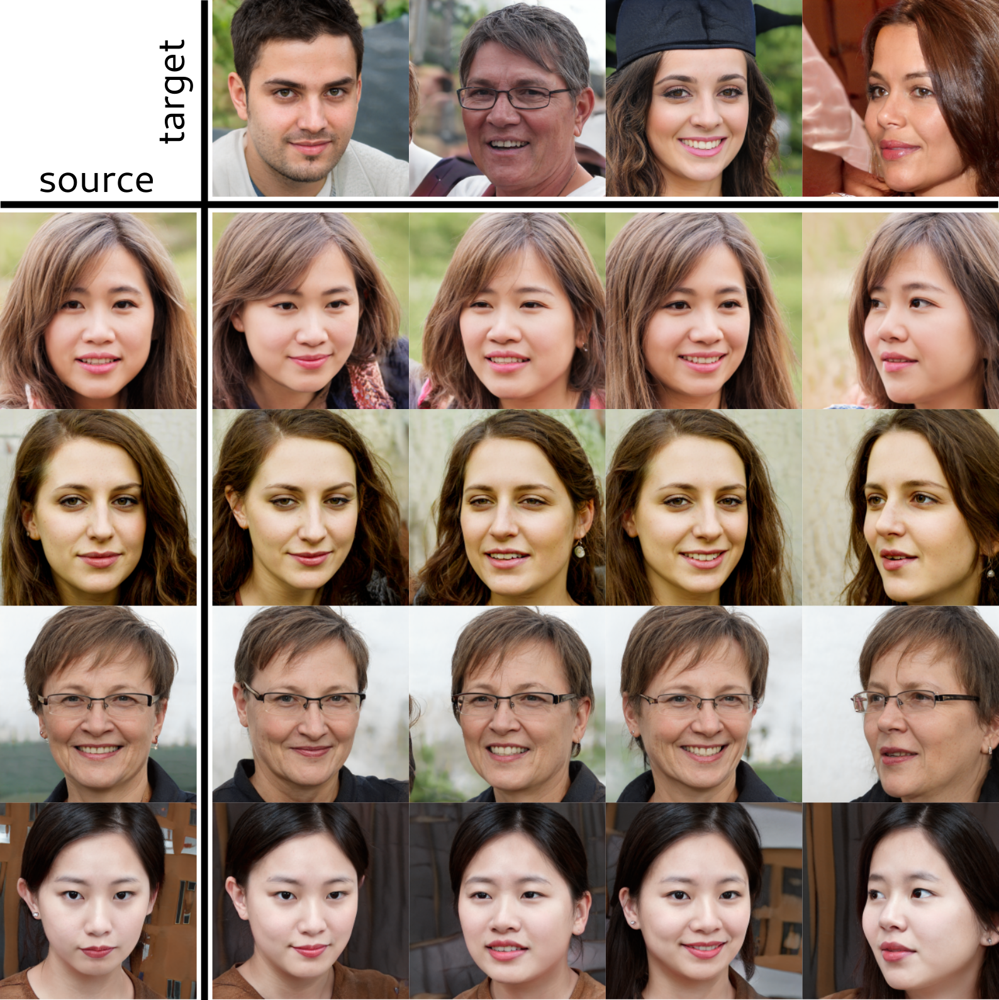

Stella Bounareli
I am a third year PhD student at School of Computer Science and Mathematics of Kingston University of London (UK),
under the supervision of Prof. Vasileios Argyriou and Prof. Georgios Tzimiropoulos. My research focuses on facial analysis and manipulation using
Generative Adversarial Networks (GANs).
Before my PhD degree, I was working as a Research Assistant at the Center for Research and Technology Hellas CERTH (Greece).
My research was mainly focused on 3D object inspection algorithms, and on object and face detection/tracking on videos.
I obtained my Integrated Masters degree from the ECE Department of Aristotle University of Thessaloniki (Greece), where I did my dissertation,
entitled "Recognition of salient locations and creation of a location timeline by using GPS data", under the direction of Prof. Anastasios Delopoulos.
My academic e-mail is k2033759 [ at ] kingston.ac.uk
Publications
-
Finding Directions in GAN's Latent Space for Neural Face Reenactment 33rd British Machine Vision Conference (BMVC), 2022
Paper Project Page Source Code
This paper is on face/head reenactment where the goal is to transfer the facial pose (3D head orientation and expression) of a target face to a source face. We introduce a new method for neural face reenactment, by leveraging the high quality image generation of pretrained generative models (GANs) and the disentangled properties of 3D Morphable Models (3DMM). The core of our approach is a method to discover which directions in latent GAN space are responsible for controlling facial pose and expression variations.
-
StyleMask: Disentangling the Style Space of StyleGAN2 for Neural Face Reenactment 17th IEEE conference on Automatic Face and Gesture Recognition (FG), 2023
Paper Source Code
In this paper we present a method that using unpaired randomly generated facial images, learns to disentangle the identity characteristics of a human face from its pose by incorporating the recently introduced style space S of StyleGAN2, a latent representation space that exhibits remarkable disentanglement properties. By capitalizing on this, we learn to successfully mix a pair of source and target style codes using supervision from a 3D model. The resulting latent code, that is subsequently used for reenactment, consists of latent units corresponding to the facial pose of the target only and of units corresponding to the identity of the source only, leading to notable improvement in the reenactment performance compared to recent state-of-the-art methods.
2022
Work Experience
Jan. 2018 - June 2020 |
Research Assistant at Center for Research and Technology Hellas, CERTH (Greece). Participated in: |
2022 |
Teaching assistant on MSc programme modules at Kingston Univeristy, London (CI7520: Machine Learning and Artificial Intelligence) |